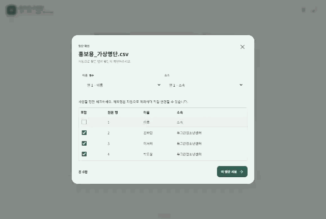
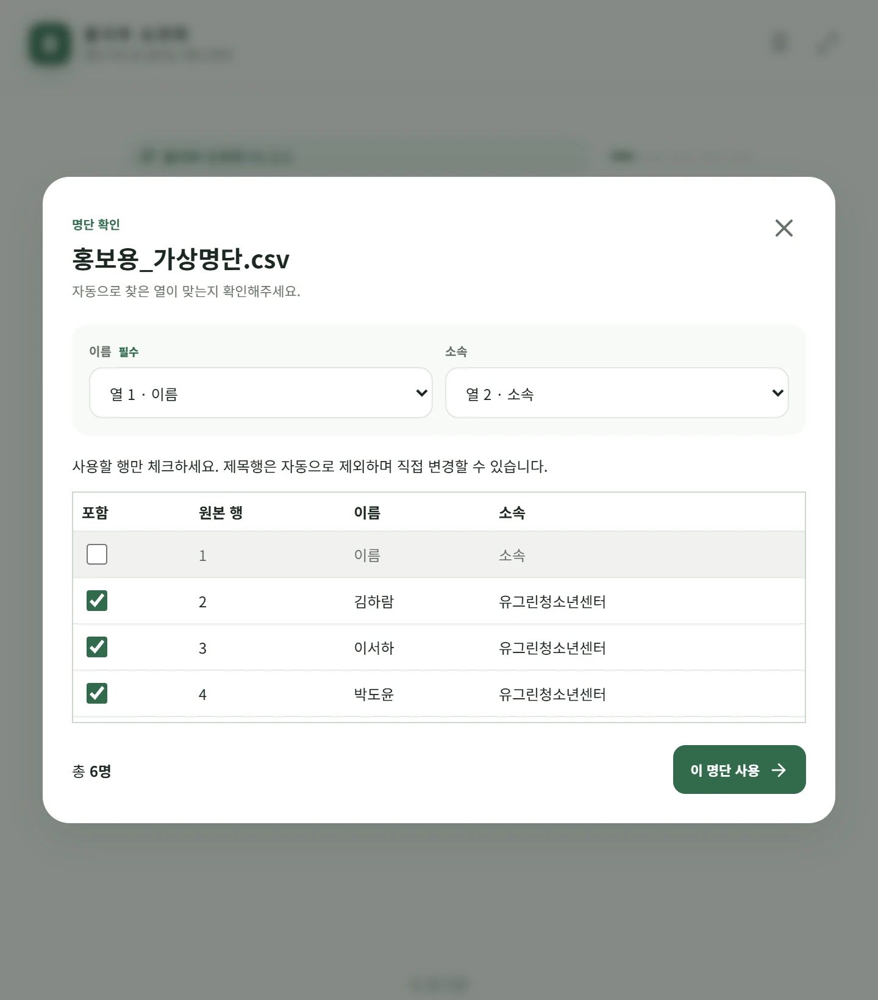
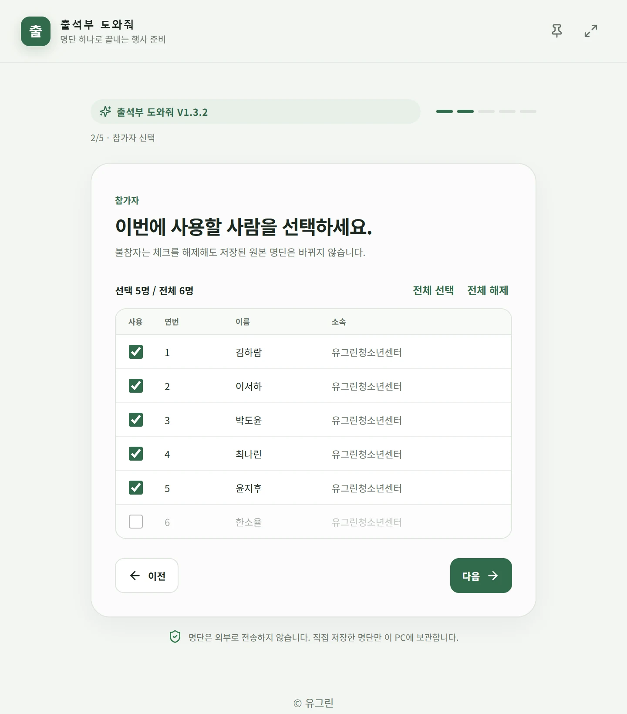
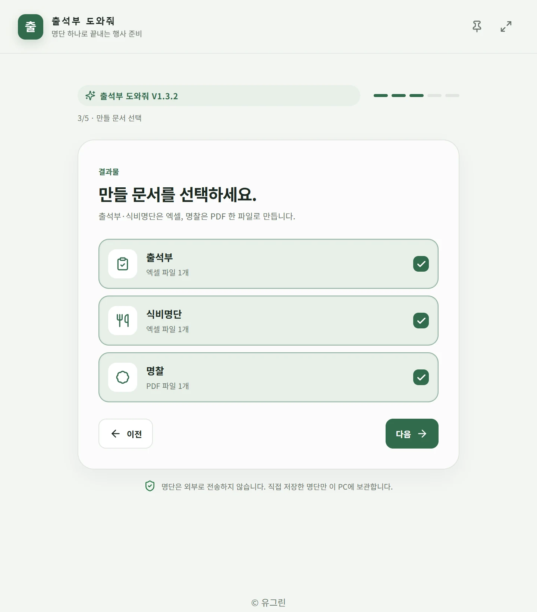
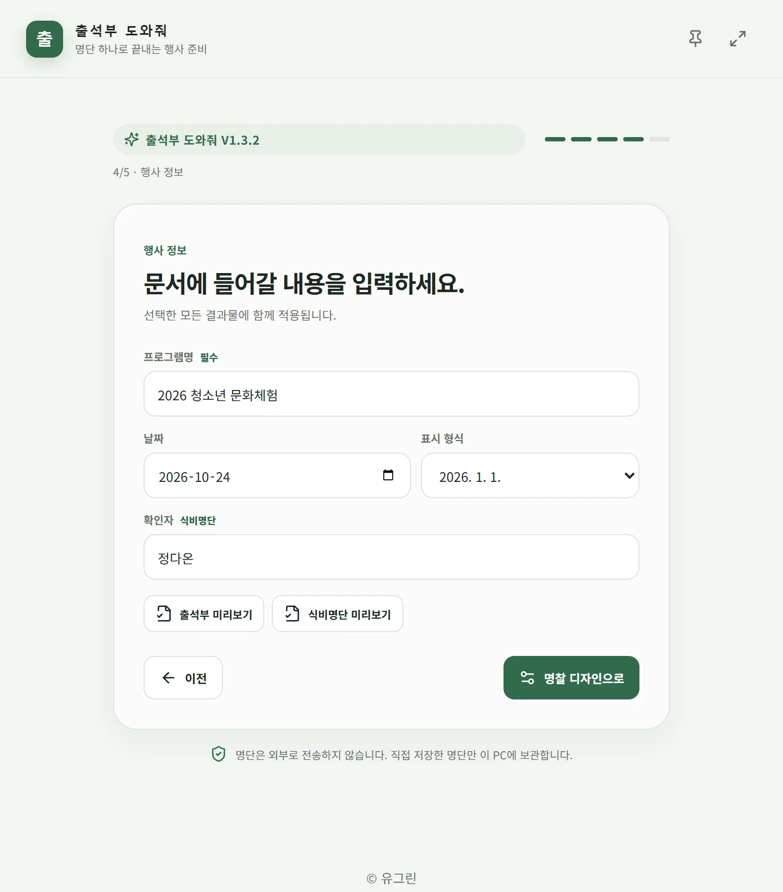
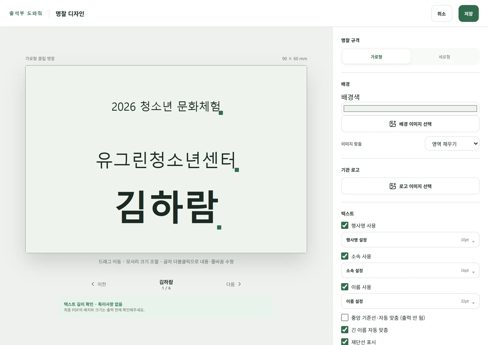
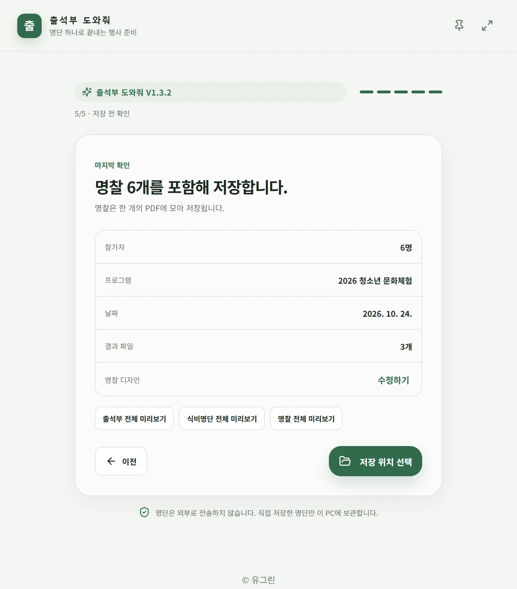
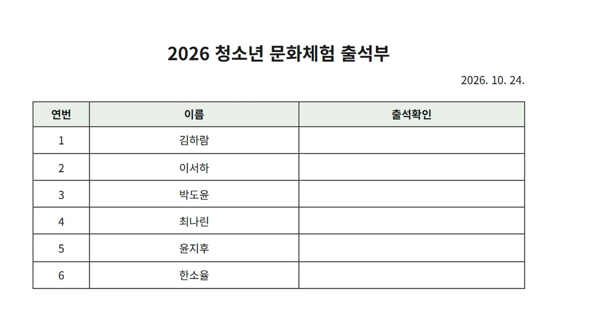
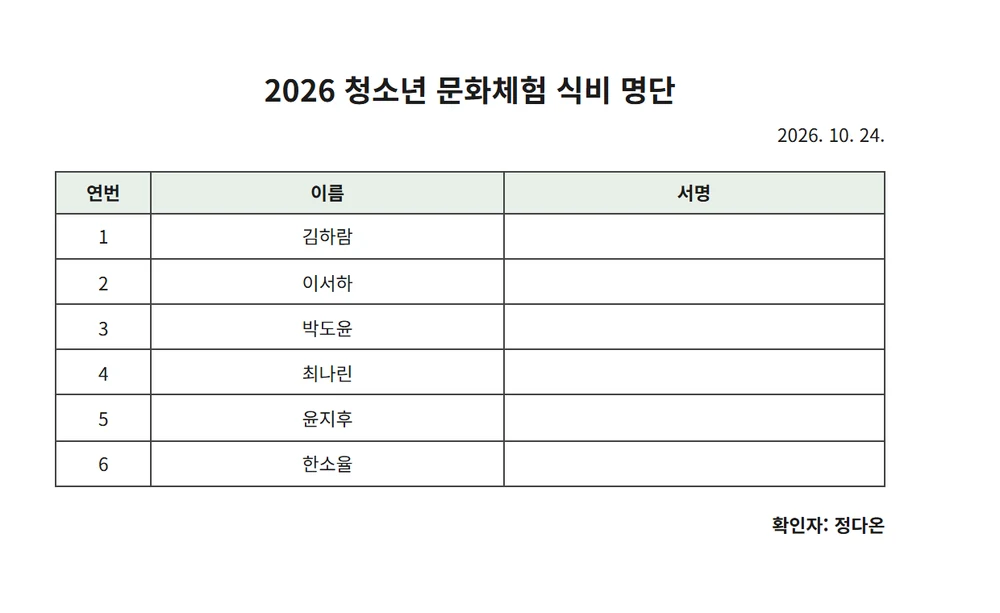
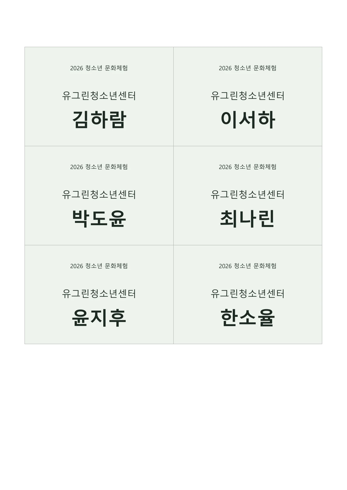

WINDOWS 로컬 업무도구
명단 하나에
출석부, 식비명단,
명찰까지.
명단 파일 하나를 불러와 출석부·식비명단 XLSX와 명찰 PDF를 만드세요. 파일 처리는 내 PC에서 이루어집니다.

반복 업무는 줄이고,
프로그램 준비에 집중하세요.
출석부 XLSX
식비명단 XLSX
명찰 PDF
앱 미리보기
{kind=link}

{kind=link}
{kind=link}

{kind=link}

{kind=link}

{kind=link}

{kind=link}

가상의 한국 이름 6명 · 유그린청소년센터 · 2026 청소년 문화체험. 실제 개인정보를 사용하지 않았습니다.
하나의 명단, 세 가지 결과물.
출석 확인부터 식비 서명, 참가자 명찰까지.
각 문서에 맞는 파일로 만듭니다.
출석부
XLSX{kind=link}

연번·이름·출석확인 칸을 정리한
행사 출석 확인용 엑셀.
식비명단
XLSX{kind=link}

서명 칸과 확인자를 담은
식비 확인용 엑셀.
명찰
PDF{kind=link}

명찰을 A4에 자동 배치하고,
재단선과 함께 한 PDF로.
출석부·식비명단은 XLSX, 명찰은 PDF입니다. 인쇄 전 미리보기와 프린터 설정을 확인해주세요.
우리 행사에 맞게,
명찰도 직접.
이름은 크게, 소속은 보기 좋게.
미리보기 위에서 텍스트를 드래그하고
크기와 색상을 조정하세요.
- 가로형·세로형 규격
- 행사명·소속·이름의 글꼴과 배치
- 배경·로고 이미지와 디자인 템플릿
- 참가자별 미리보기와 긴 이름 자동 맞춤
배경·로고 파일 선택과 템플릿 보관은 Windows 앱에서 지원합니다.
명단은 내 PC 안에.
로컬 처리
파일 읽기와 문서 생성은
Windows 앱에서 처리합니다.
외부 서버 전송 없음
명단을 서버로 업로드하거나
자동으로 동기화하지 않습니다.
선택한 파일만
직접 선택한 명단을 읽고,
원본을 변경하지 않습니다.
명단 보관은 직접 저장을 선택한 경우에만, Windows 계정 기반 암호화로 이루어집니다. 생성된 XLSX·PDF는 별도 암호화되지 않습니다. 개인정보 처리 안내 ↗
다음 행사 준비는
조금 더 가볍게.
출석부 도와줘와 함께 시작하세요.
Windows 앱 다운로드
v1.3.3 · 2026.09.17 · Windows 설치 파일
WebView2가 없으면 설치 중 인터넷 연결이 필요합니다.